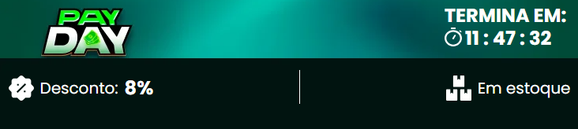

Placa-Mãe ASUS TUF GAMING A520M-PLUS II, AMD AM4, mATX, DDR4, Preto - 90MB17G0-M0EAY0


4.999,00
Descrição do produto
Memória Kingston Fury Beast Marca: Gigabyte Modelo: B450M Gaming Especificações: CPU: Soquete AM4: Suporte para a segunda geração Ryzen / Ryzen com Radeon Vega Graphics / Athlon com processadores Radeon Vega Graphics / Ryzen de 1ª geração (Por favor, consulte "Lista de Suporte da CPU" para mais informações.) Chipset: AMD B450 Memória: 2 x soquetes DDR4 DIMM suportando até 32 GB de memória do sistema Arquitetura de memória dual channel Suporte para módulos de memória DDR4 3600(O.C.)/3466(O.C.)/3200(O.C.)/2933/2667/2400/2133 MHz Suporte para módulos de memória DIMM 1Rx8 / 2Rx8 sem buffer ECC (operam em modo não-ECC) Suporte para módulos de memória DIMM não-bufferizados 1Rx8 / 2Rx8 / 1Rx16 não-ECC Suporte para módulos de memória Extreme Memory Profile (XMP) Gráficos a bordo: Processador Gráfico Integrado: 1 x porta D-Sub, suportando uma resolução máxima de 1920x1200 @ 60 Hz 1 x porta DVI-D, suportando uma resolução máxima de 1920x1200 @ 60 Hz * A porta DVI-D não suporta conexão D-Sub por adaptador. 1 x porta HDMI, suportando uma resolução máxima de 4096x2160 @ 60 Hz * Suporte para a versão HDMI 2.0 e HDCP 2.2. * O suporte real pode variar de acordo com a CPU. Memória compartilhada máxima de 2 GB Audio: Codec Realtek ALC887 Áudio de alta definição 2/4 / 5.1 / 7.1-channel * Para configurar o áudio de 7.1 canais, é necessário usar um módulo de áudio do painel frontal de HD e ativar o recurso de áudio multicanal através do driver de áudio. Suporte para saída S / PDIF LAN: Chip LAN Realtek GbE (10/100/1000 Mbit) Slots de expansão: 1 x slot PCI Express x16, rodando a x16 (o slot PCIEX16 está em conformidade com o padrão PCI Express 3.0). 2 x slot PCI Express x1 (o slot PCI Express x1 atende ao padrão PCI Express 2.0). Interface de armazenamento: 1 x conector M.2 (soquete 3, tecla M, tipo 2242/2260/2280 SATA e suporte PCIe x4 / x2 * SSD) * Suporta apenas SSDs M.2 SATA ao usar um processador AMD Série 7 ou Athlon ™ . 4 x conectores SATA de 6 Gb / s Suporte para RAID 0, RAID 1 e RAID 10 USB: Chipset: 2 portas USB 3.1 Gen 1 disponíveis através do conector USB interno 6 portas USB 2.0 / 1.1 (2 portas no painel traseiro, 4 portas disponíveis através dos conectores USB internos) CPU: 4 portas USB 3.1 Gen 1 no painel traseiro Conectores Internos de E / S: 1 x conector de alimentação principal ATX de 24 pinos 1 x conector de alimentação ATX 12V de 8 pinos 1 x conector do ventilador da CPU 2 x conector de ventiladores do sistema 1 x conector M.2 soquete 3 4 x conectores SATA de 6 Gb / s 1 x conector do painel frontal 1 x conector de áudio do painel frontal 1 x conector de saída S / PDIF 1 x CPU cooler LED faixa / RGB LED faixa de cabeçalho 1 x conector USB 3.1 Gen 1 2 x conector USB 2.0 / 1.1 1 x conector Trusted Platform Module (TPM) (2x10 pinos, apenas para o módulo GC-TPM2.0) 1 x conector de alto-falante 1 x conector de porta serial 1 x jumper Clear CMOS 1 x conector de intrusão do chassi Conectores do painel traseiro: 1 x porta de teclado PS/2 1 x porta de mouse PS/2 1 x porta D-Sub 1 x porta DVI-D 1 x porta HDMI 4 x portas USB 3.1 Gen 1 2 x portas USB 2.0 / 1.1 1 x porta RJ-45 3 x tomadas de áudio Controlador I / O: Chip Controlador ITE I / O Monitoramento H / W: Detecção de tensão Detecção de temperatura Detecção de velocidade do ventilador Aviso de superaquecimento Aviso de falha do ventilador Controle de velocidade do ventilador * Se a função de controle de velocidade do ventilador é suportada dependerá do cooler que você instalar. BIOS: 1 x 128 Mbit de flash Uso do BIOS UEFI AMI licenciado PnP 1.0a, DMI 2.7, WfM 2.0, SM BIOS 2.7, ACPI 5.0 Sistema operacional: Suporte para o Windows 10 de 64 bits Fator de forma: Fator de forma Micro ATX 24,4 cm x 20,5 cm Conteúdo da embalagem: Placa-Mãe Gigabyte B450M Gaming Drive Guia do usuário Garantia: 12 meses de Garantia Fabricante
Memória Kingston Fury Beast Marca: Gigabyte Modelo: B450M Gaming Especificações: CPU: Soquete AM4: Suporte para a segunda geração Ryzen / Ryzen com Radeon Vega Graphics / Athlon com processadores Radeon Vega Graphics / Ryzen de 1ª geração (Por favor, consulte "Lista de Suporte da CPU" para mais informações.) Chipset: AMD B450 Memória: 2 x soquetes DDR4 DIMM suportando até 32 GB de memória do sistema Arquitetura de memória dual channel Suporte para módulos de memória DDR4 3600(O.C.)/3466(O.C.)/3200(O.C.)/2933/2667/2400/2133 MHz Suporte para módulos de memória DIMM 1Rx8 / 2Rx8 sem buffer ECC (operam em modo não-ECC) Suporte para módulos de memória DIMM não-bufferizados 1Rx8 / 2Rx8 / 1Rx16 não-ECC Suporte para módulos de memória Extreme Memory Profile (XMP) Gráficos a bordo: Processador Gráfico Integrado: 1 x porta D-Sub, suportando uma resolução máxima de 1920x1200 @ 60 Hz 1 x porta DVI-D, suportando uma resolução máxima de 1920x1200 @ 60 Hz * A porta DVI-D não suporta conexão D-Sub por adaptador. 1 x porta HDMI, suportando uma resolução máxima de 4096x2160 @ 60 Hz * Suporte para a versão HDMI 2.0 e HDCP 2.2. * O suporte real pode variar de acordo com a CPU. Memória compartilhada máxima de 2 GB Audio: Codec Realtek ALC887 Áudio de alta definição 2/4 / 5.1 / 7.1-channel * Para configurar o áudio de 7.1 canais, é necessário usar um módulo de áudio do painel frontal de HD e ativar o recurso de áudio multicanal através do driver de áudio. Suporte para saída S / PDIF LAN: Chip LAN Realtek GbE (10/100/1000 Mbit) Slots de expansão: 1 x slot PCI Express x16, rodando a x16 (o slot PCIEX16 está em conformidade com o padrão PCI Express 3.0). 2 x slot PCI Express x1 (o slot PCI Express x1 atende ao padrão PCI Express 2.0). Interface de armazenamento: 1 x conector M.2 (soquete 3, tecla M, tipo 2242/2260/2280 SATA e suporte PCIe x4 / x2 * SSD) * Suporta apenas SSDs M.2 SATA ao usar um processador AMD Série 7 ou Athlon ™ . 4 x conectores SATA de 6 Gb / s Suporte para RAID 0, RAID 1 e RAID 10 USB: Chipset: 2 portas USB 3.1 Gen 1 disponíveis através do conector USB interno 6 portas USB 2.0 / 1.1 (2 portas no painel traseiro, 4 portas disponíveis através dos conectores USB internos) CPU: 4 portas USB 3.1 Gen 1 no painel traseiro Conectores Internos de E / S: 1 x conector de alimentação principal ATX de 24 pinos 1 x conector de alimentação ATX 12V de 8 pinos 1 x conector do ventilador da CPU 2 x conector de ventiladores do sistema 1 x conector M.2 soquete 3 4 x conectores SATA de 6 Gb / s 1 x conector do painel frontal 1 x conector de áudio do painel frontal 1 x conector de saída S / PDIF 1 x CPU cooler LED faixa / RGB LED faixa de cabeçalho 1 x conector USB 3.1 Gen 1 2 x conector USB 2.0 / 1.1 1 x conector Trusted Platform Module (TPM) (2x10 pinos, apenas para o módulo GC-TPM2.0) 1 x conector de alto-falante 1 x conector de porta serial 1 x jumper Clear CMOS 1 x conector de intrusão do chassi Conectores do painel traseiro: 1 x porta de teclado PS/2 1 x porta de mouse PS/2 1 x porta D-Sub 1 x porta DVI-D 1 x porta HDMI 4 x portas USB 3.1 Gen 1 2 x portas USB 2.0 / 1.1 1 x porta RJ-45 3 x tomadas de áudio Controlador I / O: Chip Controlador ITE I / O Monitoramento H / W: Detecção de tensão Detecção de temperatura Detecção de velocidade do ventilador Aviso de superaquecimento Aviso de falha do ventilador Controle de velocidade do ventilador * Se a função de controle de velocidade do ventilador é suportada dependerá do cooler que você instalar. BIOS: 1 x 128 Mbit de flash Uso do BIOS UEFI AMI licenciado PnP 1.0a, DMI 2.7, WfM 2.0, SM BIOS 2.7, ACPI 5.0 Sistema operacional: Suporte para o Windows 10 de 64 bits Fator de forma: Fator de forma Micro ATX 24,4 cm x 20,5 cm Conteúdo da embalagem: Placa-Mãe Gigabyte B450M Gaming Drive Guia do usuário Garantia: 12 meses de Garantia Fabricante